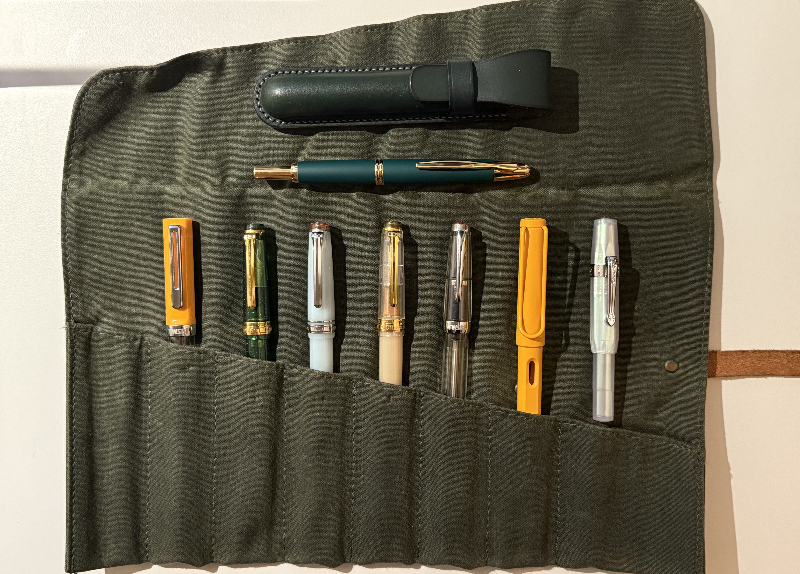

Q: What is one artifact that helps you reflect on time?
Fountain Pens. While any writing instrument would really get the point across, a fountain pen brings up more interesting questions and thoughts about my relationship with tools. (Also worth noting that all of these pens are recent purchases and manufactured within the last 5 years.)

Slowing down to write. When we write pen to paper, our brains are more engaged with the
task at
hand. Perhaps it is because we are processing the words multiple times (hearing it > thinking to write
it down > physically writing and spelling it out > perhaps reading it again once it is on paper), but I
enjoy writing because it actively slows me down. Well, I love and hate it, becuase if I have to write
something down, I cannot pay attention to much else, which runs the risk of missing important details
when taking class notes. Fountain pens especially require more attention and care when writing,
because the ink flow is more sensitive to pressure and angle, so to avoid the "scratchy" feeling, I tend
to write slower and more deliberately.
Refilling the pen with ink. This is often a meditative ritual for stationery lovers
and pen traditionalists, but I personally dislike the process of refilling the ink cartridges, but I do
find distractions while I work through the very necessary process. Some of the thoughts that come to
mind when I refill my pen(s) are:
- When was the last time I refilled this pen?
- How long did the ink last? - how many pages did I fill? how many sketches were made?
- How often do I use this pen vs other non-fountain pens?
- What ink will I fill the pen with and when was the last time I used that ink?
Maintenance on the pen. If you use the pen regularly and do not leave any ink in the
pen to dry, it should not require much maintenance. But lets be realistic and not romanticize the
day-to-day life too much - I do not create journaling content for a living, and unfortunately the
inconveniences often out weigh the joy of using the pen. When I need to do a
thorough clean - disassemble the pen to soak and flush each part - of the pen, I am once again forced to
step away from the task at hand and confront more existential questions like: "What was in such a rush
to do?" "What did I make room for in my schedule by removing the associated tasks with using this pen?"
I know I'm ending this train of thought on a bit of a downer, but I do want to clarify, I love these
tools and will find another opportunity to come back to them. Hopefully, sooner than later.
Making: An Artificial Time Pattern

This sweater was knit on and off over the course of 21 days in July. It was the third
garment I had knit this past summer, after years of not knitting at all. While it was a way to revisit
old crafts and
skills that I had left behind, it also served as a lovely reminder that time, like this project, is a
series of moments connected together. I happened to document "daily progress checks" and shared
them on my instagram stories as a way to be held accountable and actually finish the garment (which I do
leave many MANY projects unfinished).
When I think about the start and end date of this project, I am shocked by how quickly it came together.
But after the initial shock and I actually sit down to do the math, I realized that during the
14 days of actually knitting, I actually sat and knit for 4-6 hours at a time.
Suddenly, this project that took around 70 hours to create.
But really, the different time measurements of this sweater listed above are not all truly accurate.
After a few wears, I realized that I actually did not like the sleeve detail, so last week, I
unraveled the sleeves and re-knit the cuffs to match the ribbing detail as the body. Then I still need
to reinforce and close up some loose joints and ends. Also, who is to say that one day, I will not want
to make another adjustment to the sweater again?
(p.s. I want to note that, while I was typing this blog post up in VS Code, Copilot made a concluding
sentence suggestion: "Time is fluid, and so is this sweater")